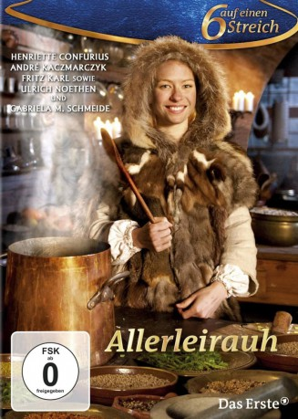

#10319 Allerleirauh
 
 IMDB-Wertung: 6.8 / 10
IMDB-Wertung: 6.8 / 10  Metascore: 0
Metascore: 0 
Es waren einmal … ein König dem war seine Frau gestorben. Nur eine, die ihr an Schönheit gleicht, darf er heiraten, so musste er es versprechen. Da blieb nur die eigene Tochter! Prinzessin Lotte ist fassungslos über den Plan ihres Vaters. Sie stellt ihm scheinbar unlösbare Aufgaben, aber der Vater erfüllt alle. So bleibt ihr nur die Flucht. In einem fremden Wald trifft sie auf einen jungen König. Wie sie in Kleidern so golden wie die Sonne, so silbern wie der Mond und so glänzend wie die Sterne König Jakob verzaubert, davon erzählt diese Neuverfilmung des Grimmschen Märchens.
Jahr: 2012
Dauer: 58 Minuten
FSK: 0
Land: Deutschland Studio: NDRTonspuren:
Untertitel:
Auflösung: 720p (1280x720) Größe: 1464 MB
Genre: Fantasy, Familie
Regisseur: Christian Theede
Drehbuch: Jacob Grimm, Wilhelm Grimm, Dieter Bongartz, Leonie Bongartz
Soundtrack: Peter W. Schmitt
Darsteller:
- Fritz Karl als Koch Mathis
- Nina Gummich als Prinzessin Friederike
 Ulrich Noethen als König Tobald
Ulrich Noethen als König Tobald- Henriette Confurius als Prinzessin Lotte
- André Kaczmarczyk als König Jakob
 Adrian Topol als Rasmus
Adrian Topol als Rasmus- Gabriela Maria Schmeide als Köchin Birthe
- Wilfried Dziallas als Richard
- Jan Stapelfeldt als Bernd
- Laura Vietzen als Prinzessin Larissa
Datei: X:\Märchen\Allerleirauh (2012, FSK0, 1280x720).mkv seit 29.12.2018
Festplatte: Kinder-Filme+Trick
 Es gibt insgesamt 61 Filme in der Gruppe 'Märchen'
Es gibt insgesamt 61 Filme in der Gruppe 'Märchen'